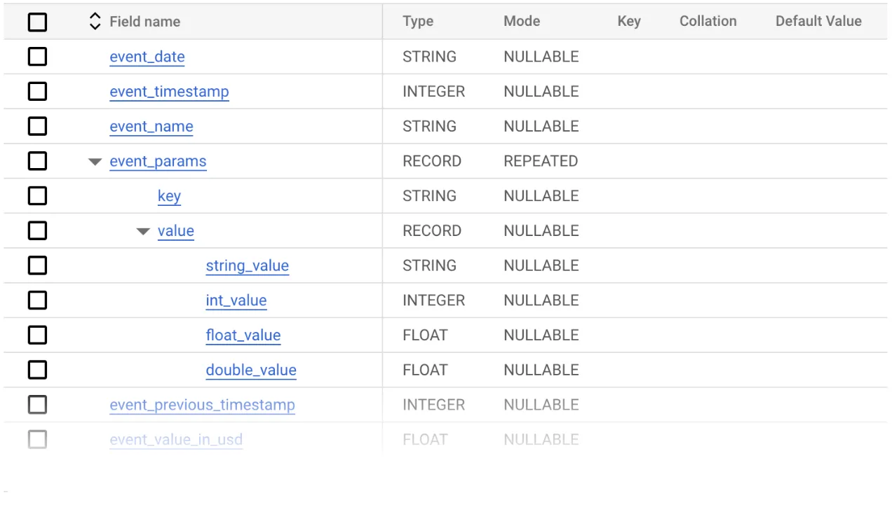

All Posts
All Posts
Advanced data science needs trustworthy metrics
October 18, 2023 by Carlin Eng
The Malloy team is on a mission to replace SQL for analytics. This is an incredibly ambitious goal, and in order to succeed we need to make Malloy available in all the places where SQL runs. This is why I’m particularly excited about the work we’ve done to make Malloy usable in Python and Jupyter Notebooks. SQL is the lingua franca of data, but it doesn’t have a monopoly. Many data scientists live primarily in Python, and only use SQL as a method to pull datasets from a remote database into their local Python environment. From there, a rich ecosystem of Python libraries enables them to execute complex tasks like forecasting and ML model training.
Machine learning models are highly sensitive to the quality of input data. As such, it’s a common adage that Machine Learning Engineering is 90% data engineering, 10% model development -- as the saying goes, "garbage-in, garbage-out". Ensuring that a model is trained on the correct implementation of a metric can have profound implications for a business. To take an extreme example, in its 2021 earnings report, Unity Technologies claimed that an issue with “ingesting bad data from a large customer" resulted in a loss of $110 million in 2022. I’d be willing to bet that “bad data ingestion” means “incorrectly written SQL query”. Traditional analytics and business intelligence tools developed the notion of the semantic data model to store shared definitions of metrics and avoid issues like this; however, these technologies have not made inroads amongst the machine learning crowd.
The recently released Malloy Python package aims to bridge this gap by allowing users to import and query their Malloy semantic data models directly from Jupyter notebooks.
Example: Forecasting with Google Analytics 4 Data
Let’s take a look at a simple, but realistic example: forecasting sales based on data from Google Analytics (GA4). If you want to follow along in a notebook as you read this post, you can visit this example on Google Colab.
Google Analytics is one of the most widespread data sources in the world. The out-of-box dashboards provided by GA are fine for basic tasks, but more sophisticated analysis requires exporting the data out of Google Analytics and into BigQuery. Unfortunately, the BigQuery export schema is way too complicated for normal people to understand. The schema contains 23 columns, 11 of which are nested “record” types. Three of those “record” types contain further nested records, many of which have column names of “key” and “value”, which means the schema of the data can’t be determined unless we actually peek inside the data.
The basic question of “how do I find revenue?” has an atrociously complex answer that requires multiple UNNEST statements, obscure filters, and a verbose COALESCE operation (see this list of queries for examples). Doing simple things requires the user to know a ton of useless trivia like this, and as a data scientist, it's the type of stuff I’d rather not be filling my head with.
That’s where Malloy comes in. Malloy allows data modelers to define this tedious logic up front, a single time. It is then hidden from downstream users, who can query the data model without having to understand all this complexity, or worry about whether they’re doing it the right way. Also, since Malloy is a full-fledged query language with the complete power of relational algebra, data scientists and analysts have total freedom to explore the dataset even if they need to step outside the bounds of the metrics that are explicitly modeled in the semantic layer. No other semantic modeling language provides this combination of safety and freedom when exploring data. In the GA4 example, we created a simple data model that handles all the tedious data transformations and stores the golden definitions of key metrics like revenue. This model is saved to a git repository, which a data scientist can clone into their Jupyter environment and access via the %%malloy_model IPython magic command:
From there, it’s trivial to run a simple query to calculate revenue by day using the %%malloy_query magic command. Every Malloy query compiles to a single SQL query, which is then executed on the data warehouse. The Malloy Python client retrieves the results and stores them in a Pandas dataframe.
The trustworthy version of the revenue metric has been pulled into our Jupyter notebook, where we have access to all of the standard Python data science libraries like sklearn and prophet which can take our analysis to the next level. In the next cell, we create the most basic version of a revenue forecast using the prophet library, and plot the results:
The forecast doesn't look very good. The chart goes down and to the right, and eventually we see forecasted revenue dipping into the negatives. Clearly we have some work to do on the predictions, but we have all the necessary tools at hand.
Malloy + Python: Better Together
Malloy's integration with Python and Jupyter Notebooks is a critical step towards simplifying complex and error-prone data workflows. The GA4 example underscores Malloy's potential to declutter and streamline, providing a sturdy foundation for sophisticated analyses. By bridging the metrics gap between business analytics and machine learning, we're confident that Malloy will prove invaluable to the data scientists of the future.
To learn more, visit our documentation page, try it out for yourself with this sample Colab notebook, and join our Slack Community to connect with our passionate user base!